Mount Kigali is a prominent hill located in Kigali City, Rwanda, mainly in the Nyarugenge District, and is part of the landscape that gives Rwanda the name “Land of a Thousand Hills.” It is well known for its scenic views of the city and is a popular place for hiking, jogging, and relaxation. The mountain attracts both residents and visitors who enjoy outdoor activities and fresh air, while its surroundings show a blend of natural environment and urban development. Mount Kigali also contributes to tourism and promotes a healthy lifestyle among the people of Kigali.
Mount Kigali is special because it provides breathtaking views of Kigali City and serves as a popular destination for outdoor activities such as hiking and jogging.
 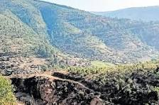
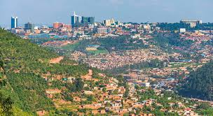
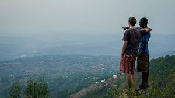
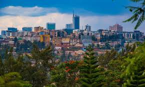
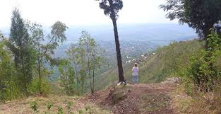
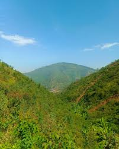
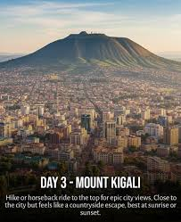
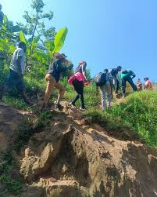
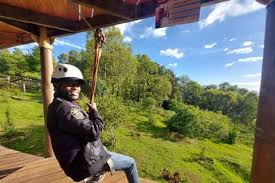
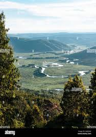
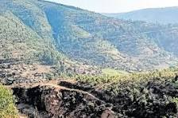
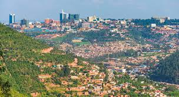
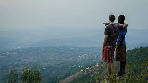
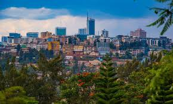
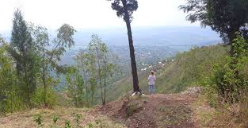
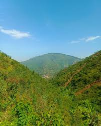
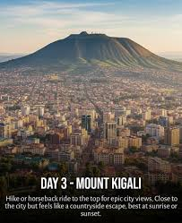
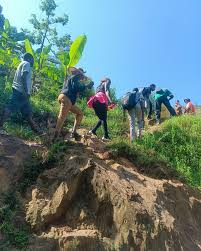
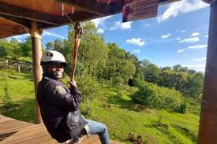
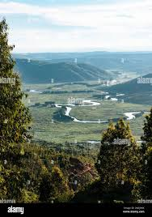